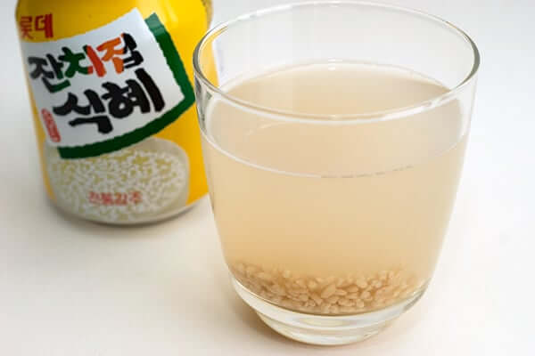
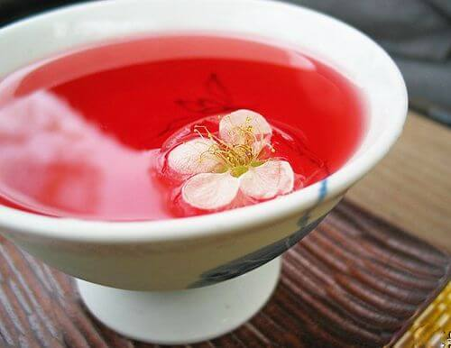
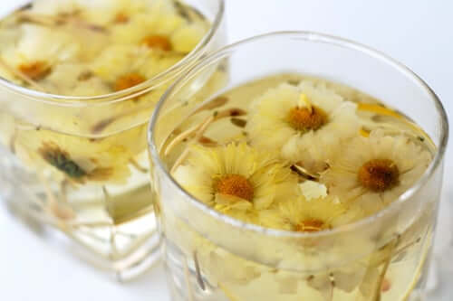
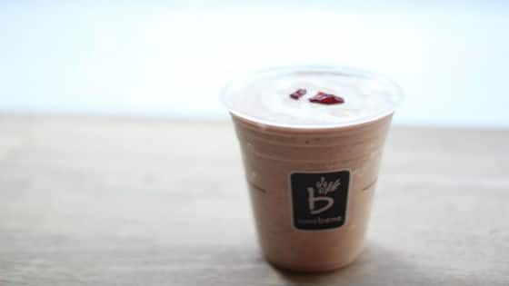
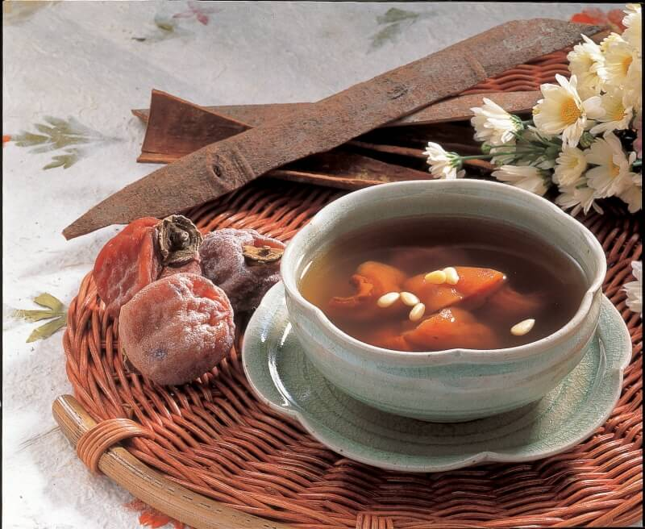
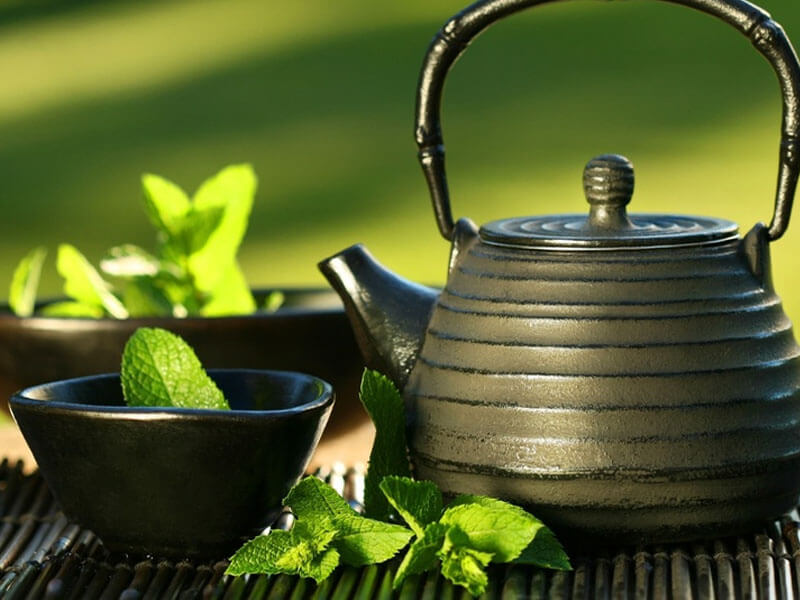
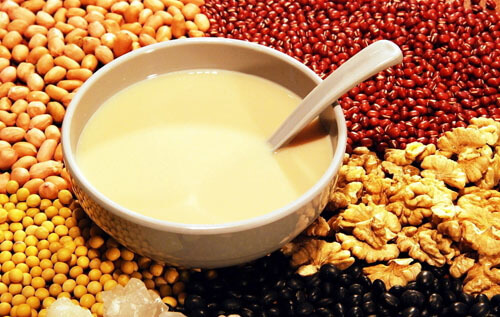
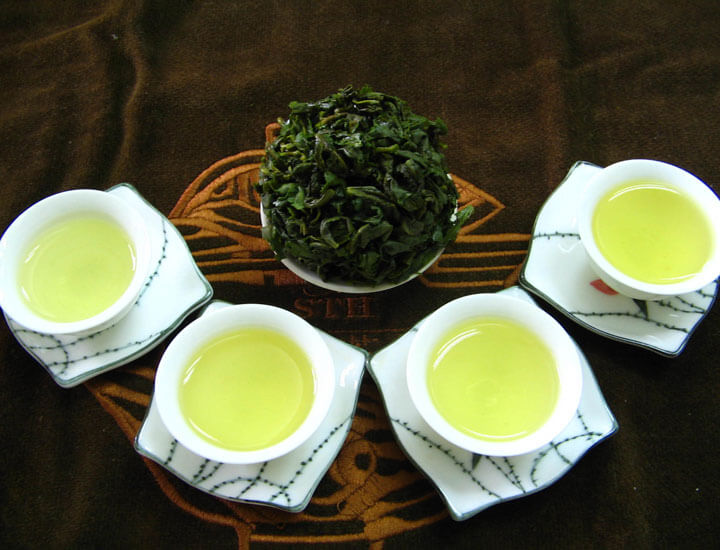

Indonesia Beverages

Bajigur
Manis dan hangat, rasa minuman yang cocok diminum pas dingin-dingin ini, namanya Bandrek. Bahan dasar bandrek adalah gula aren dan santan. Untuk menambahkan kenikmatan rasa, bajigur ditambah sedikit bubuk vanili, jahe dan garam.

Sekoteng
Minuman yang lahir di Jawa Tengah ini, ternyata merupakan adaptasi atau peranakan dan kembangan dari tradisi Cina dan Jawa. Rasa hangat yang dimiliki sekoteng berasal dari gula merah dan jahe yang direbus. Masyarakat Jawa menyebut sekoteng “nyokot weteng” yang artinya “menggigit perut” ini karena rasa hangat yang terasa itu tadi guys!.

Wedang Ronde
Wedang ronde paling enak disantap saat udara dingin. Minuman hangat yang populer di Jawa ini biasanya dijual dengan gerobak. Minuman yang identik di Jawa ini ternyata makanan tradisional dari Cina, Tangyuan. Wedang ronde ini juga merupakan modifikasi dari tangyuan.

Selendang mayang
Minuman khas betawi ini jarang ditemui karena dikalangan masyarakat Betawi dianggap minuman kuno.Selendang mayang biasanya disajikan ketika acara tertentu, saat lebaran, acara keluarga, arisan dan lainnya. Bahan dasar pembuatan selendang mayang adalah tepung beras. Sedangkan kuahnya terbuat dai daun pandan, gula merah, garam, gula dan air santan. Minuman ini selain menghilangkan dahaga pun mengenyangkan karena porsinya yang cukup banyak.

Minuman yang enak disantap saat hari panas ini memang mudah dijumpai di mana pun. Minuman ini terdiri dari alpukat, kelapa muda, nangka, cincau, susu kental manis dan es. Banyak pedagang kaki lima yang berjualan di pinggir trotoar , harganya pun sangat terjangkau.
Korean Beverages
Sikye
Sikhye adalah minuman beras tradisional Korea yang manis seperti tradisional - sangat manis, pada kenyataannya, itu sering disajikan sebagai makanan penutup! Minuman Korea ini mengandung beras yang dimasak, yang memberikan tekstur yang menarik saat Anda sampai ke dasar, dan telah disajikan di Korea selama berabad-abad sebagai akhir tradisional untuk makan.

Omija Tea
The omija berry dinamai karena perpaduan unik dari rasa (‘omija’ secara harfiah diterjemahkan menjadi lima-rasa), jadi tidak mengherankan bahwa teh yang dibuat dari omija berry juga serbaguna. Meskipun dapat dinikmati sendiri atau dengan madu sebagai pemanis, teh omija juga bisa dibumbui dengan kacang hijau atau bunga untuk mengubahnya menjadi berbagai pukulan.

Chrysanthemum Tea
Teh krisan adalah minuman Korea yang populer (dan luar biasa indah) yang disukai orang banyak karena alasan yang bagus. Untuk membuat teh yang sangat menarik ini, bunga kering direndam dalam madu selama beberapa bulan dan kemudian diseduh dengan air panas, menghasilkan teh ringan dan sedikit manis yang penuh dengan bunga-bunga.

Misugaru
Misagura adalah minuman yang protein shake dingin, misagura banyak variasi rasa dapat mencampur dan mencocokan biji dan kacang kacangan sendiri. Misugaru mudah ditemukan saat Anda bepergian dan keluar, tetapi juga mudah berbaur di rumah jika Anda memiliki blender, es, dan agen pemanis seperti madu atau sirup maple. Karena kandungan proteinnya yang tinggi, misugaru adalah pengganti makanan yang lezat.

Sujeonggowa
Sujeonggwa adalah bagian yang sama dengan makanan pencuci mulut dan minuman, dan menyajikan campuran kayu manis, gula merah, jahe, dan kesemek yang lezat yang datang bersama-sama untuk membuat rasa manis yang lezat yang tidak seperti yang lain. Sujeonggwa rasanya seperti musim Jatuh dalam cangkir, tetapi disajikan dingin sehingga Anda juga dapat menikmatinya dengan sangat nyaman melalui musim semi dan musim panas.
Chinese Beverages

Chong Shi Cha
Chong Shi Cha yaitu teh khas negeri China yang diproduksi di provinsi Guangxi dan menjadi salah satu teh tradisional orang China yang paling populer dan termahal di dunia. Sejak dulu teh ini dinobatkan sebagai teh termahal di dunia meskipun rasa unik dan lebih berfungsi sebagai minuman herbal karena proses pembuatannya yang tidak mudah.

Naicha
Naicha adalah minuman berkhasiat , khasiat minuman ini sangat banyak, terutama menghangatkan badan dan menambah energi bagi tubuh. Minuman ini juga sedikitt menyenangkan dan sangat baik untuk pertumbuhan. Ada pula yamg menambahkan bahan bahan alami lain seprti gingseng dan telur untuk menambah khasiatnya

Teh Bunga Mekar
Minuman khas China ini adalah secangkir karya seni yang menyuguhkan pengalaman unik saat menyisip teh panas. Pada dasarnya minuman ini tak berbeda jauh dengan teh China lainnya. Terbuat dari campuran daun teh dan bunga dikeringkan, yang menjadikannya unik adalh bentuk teh yang tampak seperti rangkaian bunga saat diseduh.

Soy Milk
Soy Milk adalah minuman susu kedelai dari hewan namun penuh nialai gizi. Susu kacang kedelai adalah semacam minuman yang dibuat dari kacang kuning, mendapat namanya karena ini berwarna putih kekuningan mirip dengan susu.

Tieguanyin
Minuman ini biasa disebut dengan teh oolong merupakan salah satu minuman tradisional yang berasal dari china. Dimana teh ini dapat diminum di kala antai bersama keluarga dan teman. terlepas dari hal tersebut teh oolong ternyata memberikan beragaram khasiat dan manfaat untuk kesehatan. Teh oolong terbuat dari daun kuncup dan batang dari tanaman Camellia sinensis yg diolah dengan cara difermentasi dan dioksidasi sehingga membuatnya menjadi seperti perpaduan antara teh hijau dan daun teh hitam.
Terimakasih telah berkunjung :) Jika ada saran dan kritik silahkan tulis dibawah